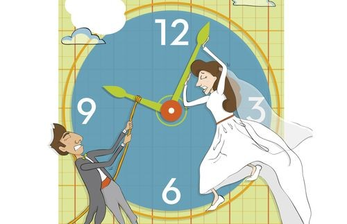

Young Adults Delay Marriage as Finances and Freedom Take Priority

More young Malaysians are choosing to delay marriage, prioritising stability and independence over tradition. Read more…
More young Malaysians are choosing to delay marriage, prioritising stability and independence over tradition. Read more…
A new survey reveals shifting living choices among 22–35‑year‑olds — from staying with parents to embracing solo living for freedom, privacy, and peace of mind. Is “me‑time” the new social currency? Read more…

For young Malaysians, work-life balance is no longer a luxury — it’s a daily struggle shaped by long hours, financial stress, and digital overload. Read more…

For young Malaysians, sleep is no longer guaranteed — it’s a daily struggle against screens, stress, and the speed of modern life. Read more…

For Lucas Lee, being yourself isn’t just about style — it’s about mental health, self-acceptance, and learning to speak with your own voice. Read more…

From anime surprises to Disney plushies, blind boxes are captivating Malaysian youth — turning mystery into a lifestyle and savings into collectibles. Read more…

From rink shifts to shooting projects, Koh En Ru juggles part-time jobs and university life — gaining independence, friendships, and a few skating skills along the way. Read more…